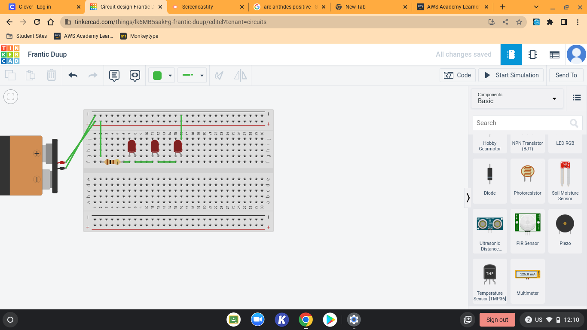

I will post some of my work on this website!!
9/2/2022 - We learned about electrical engineering. I also learned how to use Tinkercad and make 3D designs. Learned about safety tools for engineering.
9/16/22 - We made our own paper boat and put some weight on top of it to see if it float. Our group ended with 5min float with 100g. It was hot outside but had a great experience out of this whole week.
9/23/22 - We finally finished our project and tested to see if it actually works. It worked and sucessfully popped our baloon. Took pictures and videos to record what happened.
9/30/22 - We finished dissecting our laptop and experienced on what exaclty is in our laptop. Found some intersting parts of the laptop that I never seen before. Had some time struggling putting it back on, but it was worth it.
10/4/22 - We started our project in TinkerCAD and worked on our prosthetic stuff. I personally worked on Dog's teeth, it was interesting to actually see the inside of the dog's mouth, because my dog hates me ;-;

10/13/22 - We worked on CADing our bottle rocket, we finished our general idea of how to make bottle rocket to function with parachute. I also made paper airplane to hit the bucket, but I failed pretty hard.

10/14/22 - We had guest speaker to explain it to us what aerospace engineers do and what they have to focus in order to accomplish what they want. Learned what's in space that are humanmade, it was interesting to listen.

10/26/22 - We created bottle rocket to experiment the life of aerospace engineers and tested our rocket. Our rocket didn't really work because there was a hole on our rocket so it just was there. Next time we make our bottle rocket, I will make sure that there is no hole on it.
11/4/22 - We learned about electrical engineering so it was very interesting. We also worked on breadboarding which is working with circuits. Learned how circuits work and function with all the battery and different things.
11/10/22 - We had a challenge about "Would you rather A) Take a math class B) Write # from 1 to million. My group came up with A as our answer and we coded a program that could calulate the amount of time we need to write 1 to million.

11/30/22 - We planned and designed to build spaghetti noodle bridge, and we got some of the work/sketch done but we need to work on actually building the bridge.
12/2/22 - we actually started working on or bridge, and it was pretty good. We finished working on the bridge and glued them, so we just need to wait until it drys.
12/20/22 - Our first bridge got destroyed while taking the bridge off the board, so we put a tape under the bridge so it comes out easily and we put lots of glue to make the bridge more flexible to bend and holds the weight of the water. It actually worked so I guess it's fine but it turned into more of a glue bridge instead of spaghetti bridge. Our third bridge turned out into like monster bridge with tons of glue over it, I'm sure it will work but it's against all the rules so it doesn't count.

1/18/23 - We learned about chemical engineering and what jobs they get with their average salary, it was interesting to look at but since it was a major that i wasn't interested in so, but it was fun to know.
1/27/23 - We did some research about the basic problems that we can find in our campus that is related to engineering, me and jayden made a google slide with goodle doc about the project proposal and wrote about the whole project purpose.
2/10/23 - We made a stick that holds the water ballon and we had to run 100 meters with it without dropping the water ballon. It was fun to make them and we unfortunately failed the run but it was a good try.
2/17/23 - I started doing my research on smoke alarm project, so I had to learn C language and learn how to use arduino. It was hard because I was totally new to it, but I had some fun time learning new things and experiencing arduino project.
2/24/23 - I started actually building the project and coding, it was badddddddddd. Nothing really worked out at first so I was stuck with it for good amount of time in class, and my partner has no coding experience so I don't know where to ask for help. Mr.Kim is also busy helping people out so he probably can't help me. I love youtube tutorials
3/3/23 - I finshed the coding but I'm getting a lot of errors with library and declaring the tone in scope. I don't know how this will turn out, I might have to ask Mr.Poole to help me because I don't know what the hell I'm doing right now, I'm stuck and tired.
3/10/23 - I have built a arduino project that detects the smoke and generates a buzzer sound to notify the people around it to prevent people from smoking in the bathroom or smoking in general, and I have worked with my partner Jayden Pang, who made a suitable case for the project so it's well protected. The process was pretty tough because I didn't know much about arduino and C so I was struggling with the coding and pushing it to the arduino, so I asked Mr.Poole for help and he helped me a lot in order to get the code working properly, but in the end, it all worked out and had fun with it.

3/24/23 - We started working on our project according to the prompt, the promt was working on a egg drop and it was pretty fun to work on it, even tho it was just the drawing.

3/29/23 - We started building an actual egg drop project with parachutes and attaching a string on four corners. We already tested with hanging a cardbox and it worked out pretty well, we will blow three ballons on the test day to work as a protection.
4/10/23 - we worked on a lot of stuff today, had a busy day where we had to built and plan a lot of things. Since we got the prompt and materials, we started working on cutting and measuring things out but we didn't get any tape to wrap things up, so i guess we have to wait until we get the tape.
4/21/23 - We measured how long our boat will be and sort of planned out how the boat will float on water, so we had some problem with balancing the boat while moving forward, but I think we kind of figured things out.
4/28/23 - We didn't do much because we didn't have any tape, we only worked on the basic structure of the boat, so we just did noting.
5/5/23 - We're just goofying around because we finished everything and ready to sail our CV swimming pool. I was just sleeping and Jayden was having a sweet nap.

5/12/23 - We worked on some weird paper work and made a slide. Our slide didn't really work, but at least we tried.
6/2/23 - I didn't see what exactly happened to our boat project because I didn't come to school on that day but I heard that our boat didn't really work out. Our tape was loosen and it fall off, so Nathan and Jayden probably had to swim and stuff. I had a lot of fun making a boat but I was a bit sad that i couldn't see what happened.